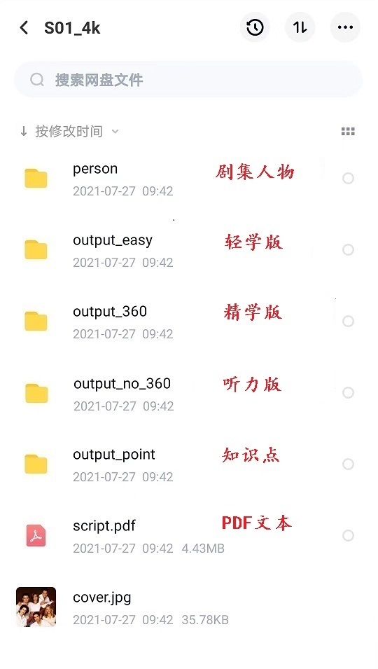

视频内容 → 体验
轻学版 ➤ 看剧插播知识点,轻松学习
精学版 ➤ 难度分级,并标注全部知识点
听力版 ➤ 去掉字幕,练听力的同时刷知识点
知识点 ➤ 知识点汇总,方便集中学习/复习
注解PDF ➤ 台词和知识点,PDF文件,方便打印出来学习
每个学习片段5分钟左右,知识点包括单词、词组、惯用语
兴趣是最好的老师，通过难度分级并进行注解，串串英语根据学生兴趣和喜好提供各种类别的经过注解的可理解内容
词汇是学习任何语言的基础，通过串串英语的课件，可以轻松将词汇量提高到10000+并对应的听力水平
结合跟读等方法，可以同步练习口语
只是想看剧时顺便记些单词，仅学轻学版即可
视频课件为标清360P，目录结构如下
